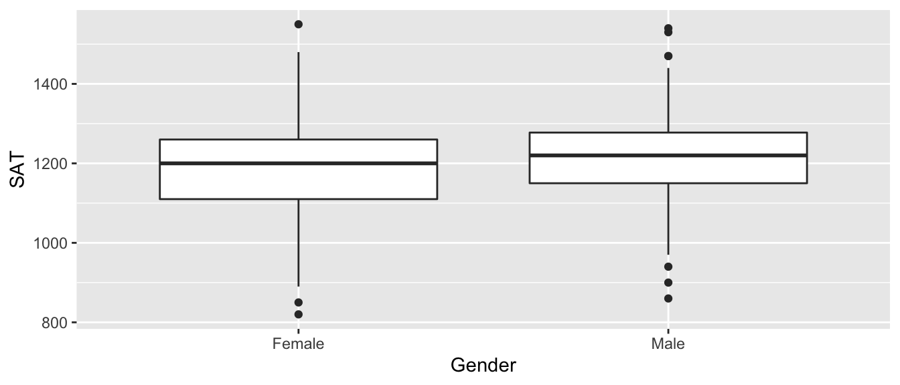
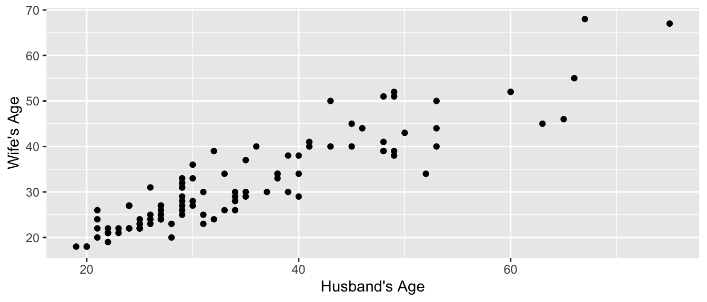
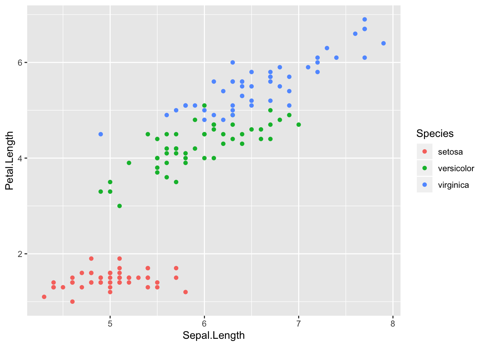
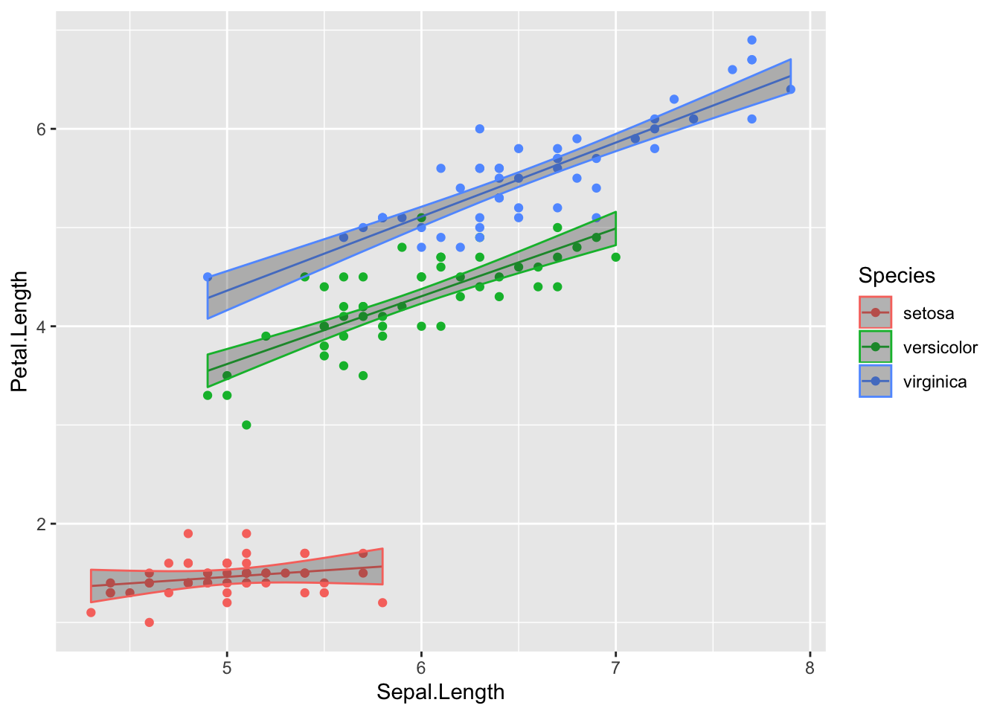
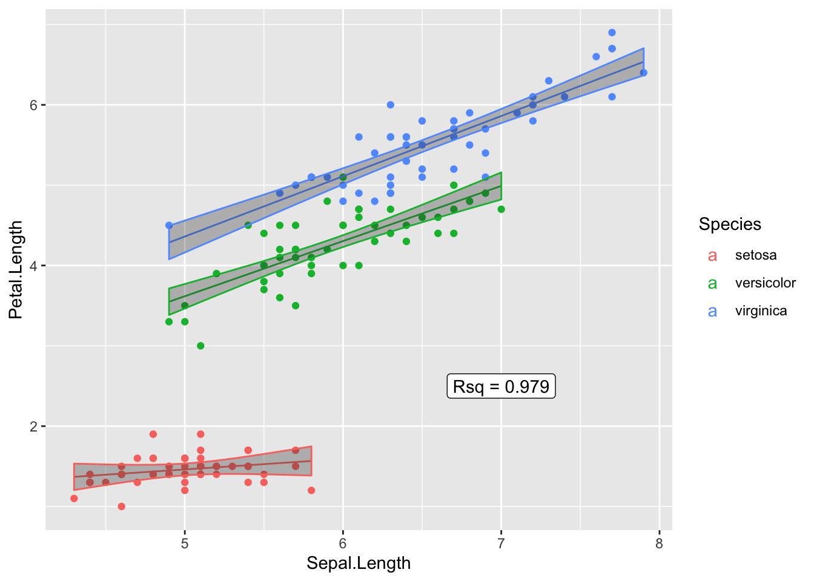

Chapter 5 Statistical Models
library(tidyverse, quietly = TRUE) # loading ggplot2 and dplyr
options(tibble.width = Inf) # Print all the columns of a tibble (data.frame)While R is a full programming language, it was first developed by statisticians for statisticians. There are several functions to do common statistical tests but because those functions were developed early in R’s history, there is some inconsistency in how those functions work. There have been some attempts to standardize modeling object interfaces, but there were always be a little weirdness.
5.1 Formula Notation
Most statistical modeling functions rely on a formula based interface. The primary purpose is to provide a consistent way to designate which columns in a data frame are the response variable and which are the explanatory variables. In particular the notation is
\[\underbrace{y}_{\textrm{LHS response}} \;\;\; \underbrace{\sim}_{\textrm{is a function of}} \;\;\; \underbrace{x}_{\textrm{RHS explanatory}}\]
Mathematicians often refer to these terms as the Left Hand Side (LHS) and Right Hand Side (RHS). The LHS is always the response and the RHS contains the explanatory variables.
In R, the LHS is usually just a single variable in the data. However the RHS can contain multiple variables and in complicated relationships.
| Right Hand Side Terms | Meaning |
x1 + x2 |
Both x1 and x2 are additive explanatory variables.
In this format, we are adding only the main effects
of the x1 and x2 variables. |
x1:x2 |
This is the interaction term between x1 and x2 |
x1 * x2 |
Because whenever we add an interaction term to a
model, we want to also have the main effects. So this
is a short cut for adding the main effect of x1 and
x2 and also the interaction term x1:x2. |
(x1 + x2 + x3)^2 |
This is the main effects of x1, x2, and x3 and
also all of the second order interactions. |
poly(x, degree=2) |
This fits the degree 2 polynomial. When fit like this, R produces an orthogonal basis for the polynomial, which is more computationally stable, but won’t be appropiate for interpreting the polynomial coefficients. |
poly(x, degree=2, raw=TRUE) |
This fits the degree 2 polynomial using \(\beta_0 + \beta_1 x + \beta_2 x^2\) and the polynomial polynomial coefficients are suitable for interpretation. |
I( x^2 ) |
Ignore the usual rules for interpreting formulas
and do the mathematical calculation. This is not
necessary for things like sqrt(x) or log(x) but
required if there is a conflict between mathematics
and the formula interpretation. |
5.2 Basic Models
The most common statistical models are generally referred to as linear models and the R function for creating a linear model is lm(). This section will introduce how to fit the model to data in a data frame as well as how to fit very specific t-test models.
5.2.1 t-tests
There are several varients on T-tests depending on the question of interest, but they all require a continuous response and a categorical explanatory variable with two levels. If there is an obvious pairing between an observation in the first level of the explanatory variable with an observation in the second level, then it is a paired t-test, otherwise it is a two-sample t-test.
5.2.1.1 Two Sample t-tests
First we’ll import data from the Lock5Data package that gives SAT scores and gender from 343 students in an introductory statistics class. We’ll also recode the GenderCode column to be more descriptive than 0 or 1. We’ll do a t-test to examine if there is evidence that males and females have a different SAT score at the college these data were take.
data('GPAGender', package='Lock5Data')
GPAGender <- GPAGender %>%
mutate( Gender = ifelse(GenderCode == 1, 'Male', 'Female'))
ggplot(GPAGender, aes(x=Gender, y=SAT)) +
geom_boxplot()
We’ll use the function t.test() using the formula interface for specifying the response and the explantory variables. The usual practice should be to save the output of the t.test function call (typically as an object named model or model_1 or similar). Once the model has been fit, all of the important quantities have been calculated and saved and we just need to ask for them. Unfortunately, the base functions in R don’t make this particularly easy, but the tidymodels group of packages for building statistical models allows us to wrap all of the important information into a data frame with one row. In this case we will use the broom::tidy() function to extract all the important model results information.
model <- t.test(SAT ~ Gender, data=GPAGender)
print(model) # print the summary information to the screen##
## Welch Two Sample t-test
##
## data: SAT by Gender
## t = -1.4135, df = 323.26, p-value = 0.1585
## alternative hypothesis: true difference in means is not equal to 0
## 95 percent confidence interval:
## -44.382840 7.270083
## sample estimates:
## mean in group Female mean in group Male
## 1195.702 1214.258## # A tibble: 1 x 10
## estimate estimate1 estimate2 statistic p.value parameter conf.low
## <dbl> <dbl> <dbl> <dbl> <dbl> <dbl> <dbl>
## 1 -18.6 1196. 1214. -1.41 0.158 323. -44.4
## conf.high method alternative
## <dbl> <chr> <chr>
## 1 7.27 Welch Two Sample t-test two.sidedIn the t.test function, the default behavior is to perform a test with a two-sided alternative and to calculate a 95% confidence interval. Those can be adjusted using the alternative and conf.level arguments. See the help documentation for t.test() function to see how to adust those.
The t.test function can also be used without using a formula by inputing a vector of response variables for the first group and a vector of response variables for the second. The following results in the same model as the formula based interface.
male_SATs <- GPAGender %>% filter( Gender == 'Male' ) %>% pull(SAT)
female_SATs <- GPAGender %>% filter( Gender == 'Female' ) %>% pull(SAT)
model <- t.test( male_SATs, female_SATs )
broom::tidy(model) # all that information as a data frame## # A tibble: 1 x 10
## estimate estimate1 estimate2 statistic p.value parameter conf.low
## <dbl> <dbl> <dbl> <dbl> <dbl> <dbl> <dbl>
## 1 18.6 1214. 1196. 1.41 0.158 323. -7.27
## conf.high method alternative
## <dbl> <chr> <chr>
## 1 44.4 Welch Two Sample t-test two.sided5.2.1.2 Paired t-tests
In a paired t-test, there is some mechanism for pairing observations in the two categories. For example, perhaps we observe the maximum weight lifted by a strongman competitor while wearing a weight belt vs not wearing the belt. Then we look at the difference between the weights lifted for each athlete. In the example we’ll look at here, we have the ages of 100 randomly selected married heterosexual couples from St. Lawerence County, NY. For any given man in the study, the obvious woman to compare his age to is his wife’s. So a paired test makes sense to perform.
## 'data.frame': 105 obs. of 2 variables:
## $ Husband: int 53 38 46 30 31 26 29 48 65 29 ...
## $ Wife : int 50 34 44 36 23 31 25 51 46 26 ...ggplot(MarriageAges, aes(x=Husband, y=Wife)) +
geom_point() + labs(x="Husband's Age", y="Wife's Age")
To do a paired t-test, all we need to do is calculate the difference in age for each couple and pass that into the t.test() function.
##
## One Sample t-test
##
## data: MarriageAges$Age_Diff
## t = 5.8025, df = 104, p-value = 7.121e-08
## alternative hypothesis: true mean is not equal to 0
## 95 percent confidence interval:
## 1.861895 3.795248
## sample estimates:
## mean of x
## 2.828571Alternatively, we could pass the vector of Husband ages and the vector of Wife ages into the t.test() function and tell it that the data is paired so that the first husband is paired with the first wife.
##
## Paired t-test
##
## data: MarriageAges$Husband and MarriageAges$Wife
## t = 5.8025, df = 104, p-value = 7.121e-08
## alternative hypothesis: true difference in means is not equal to 0
## 95 percent confidence interval:
## 1.861895 3.795248
## sample estimates:
## mean of the differences
## 2.828571Either way that the function is called, the broom::tidy() function could convert the printed output into a nice data frame which can then be used in further analysis.
5.2.2 lm objects
The general linear model function lm is more widely used than t.test because lm can be made to perform a t-test and the general linear model allows for fitting more than one explanatory variable and those variables could be either categorical or continuous.
The general workflow will be to:
- Visualize the data
- Call
lm()using a formula to specify the model to fit. - Save the results of the
lm()call to some object (usually I name itmodel) - Use accessor functions to ask for pertainent quantities that have already been calculated.
- Store prediction values and model confidence intervals for each data point in the original data frame.
- Graph the original data along with prediction values and model confidence intervals.
To explore this topic we’ll use the iris data set to fit a regression model to predict petal length using sepal length.

Now suppose we want to fit a regression model to these data and allow each species to have its own slope. We would fit the interaction model
5.3 Accessor function
Once a model has been fit, we want to obtain a variety of information from the model object. The way that we get most all of this information using base R commands is to call the summary() function which returns a list and then grab whatever we want out of that. Typically for a report, we could just print out all of the summary information and let the reader pick out the information.
##
## Call:
## lm(formula = Petal.Length ~ Sepal.Length * Species, data = iris)
##
## Residuals:
## Min 1Q Median 3Q Max
## -0.68611 -0.13442 -0.00856 0.15966 0.79607
##
## Coefficients:
## Estimate Std. Error t value Pr(>|t|)
## (Intercept) 0.8031 0.5310 1.512 0.133
## Sepal.Length 0.1316 0.1058 1.244 0.216
## Speciesversicolor -0.6179 0.6837 -0.904 0.368
## Speciesvirginica -0.1926 0.6578 -0.293 0.770
## Sepal.Length:Speciesversicolor 0.5548 0.1281 4.330 2.78e-05 ***
## Sepal.Length:Speciesvirginica 0.6184 0.1210 5.111 1.00e-06 ***
## ---
## Signif. codes: 0 '***' 0.001 '**' 0.01 '*' 0.05 '.' 0.1 ' ' 1
##
## Residual standard error: 0.2611 on 144 degrees of freedom
## Multiple R-squared: 0.9789, Adjusted R-squared: 0.9781
## F-statistic: 1333 on 5 and 144 DF, p-value: < 2.2e-16But if we want to make a nice graph that includes the model’s \(R^2\) value on it, we need to code some way of grabbing particular bits of information from the model fit and wrestling into a format that we can easily manipulate it.
| Goal | Base R command | tidymodels version |
|---|---|---|
| Summary table of Coefficients | summary(model)$coef |
broom::tidy(model) |
| Parameter Confidence Intervals | confint(model) |
broom::tidy(model, conf.int=TRUE) |
| Rsq and Adj-Rsq | summary(model)$r.squared |
broom::glance(model) |
| Model predictions | predict(model) |
broom::augment(model) |
| Model residuals | resid(model) |
broom::augment(model) |
| Model predictions w/ CI | predict(model, interval='confidence') |
|
| Model predictions w/ PI | predict(model, interval='prediction') |
|
| ANOVA table of model fit | anova(model) |
The package broom has three ways to interact with a model.
- The
tidycommand gives a nice table of the model coefficents. - The
glancefunction gives information about how well the model fits the data overall. - The
augmentfunction adds the fitted values, residuals, and other diagnostic information to the original data frame used to generate the model.
Most of the time, I use the base R commands for accessing information from a model and only resort to the broom commands when I need to access very specific quantities.
## Sepal.Length Sepal.Width Petal.Length Petal.Width Species
## 1 5.1 3.5 1.4 0.2 setosa
## 2 4.9 3.0 1.4 0.2 setosa
## 3 4.7 3.2 1.3 0.2 setosa
## 4 4.6 3.1 1.5 0.2 setosa
## 5 5.0 3.6 1.4 0.2 setosa
## 6 5.4 3.9 1.7 0.4 setosa# Remove any previous model prediction values that I've added,
# and then add the model predictions
iris <- iris %>%
select( -matches('fit'), -matches('lwr'), -matches('upr') ) %>%
cbind( predict(model, newdata=., interval='confidence') )
head(iris, n=3)## Sepal.Length Sepal.Width Petal.Length Petal.Width Species fit
## 1 5.1 3.5 1.4 0.2 setosa 1.474373
## 2 4.9 3.0 1.4 0.2 setosa 1.448047
## 3 4.7 3.2 1.3 0.2 setosa 1.421721
## lwr upr
## 1 1.398783 1.549964
## 2 1.371765 1.524329
## 3 1.324643 1.518798Now that the fitted values that define the regression lines and the associated confidence interval band information has been added to my iris data set, we can now plot the raw data and the regression model predictions.
ggplot(iris, aes(x=Sepal.Length, y=Petal.Length, color=Species)) +
geom_point() +
geom_line( aes(y=fit) ) +
geom_ribbon( aes( ymin=lwr, ymax=upr), alpha=.3 ) # alpha is the ribbon transparency
Now to add the R-squared value to the graph, we need to add a simple text layer. To do that, I’ll make a data frame that has the information, and then add the x and y coordinates for where it should go.
Rsq_data <- broom::glance(model) %>%
select(r.squared) %>%
mutate(r.squared = round(r.squared, digits=3)) %>% # only 3 digits of precision
mutate(r.squared = paste('Rsq =', r.squared)) %>% # append some text before
mutate( Sepal.Length =7, Petal.Length=2.5) # set the location to place it
Rsq_data## # A tibble: 1 x 3
## r.squared Sepal.Length Petal.Length
## <chr> <dbl> <dbl>
## 1 Rsq = 0.979 7 2.5ggplot(iris, aes(x=Sepal.Length, y=Petal.Length, color=Species)) +
geom_point( ) +
geom_line( aes(y=fit) ) +
geom_ribbon( aes( ymin=lwr, ymax=upr), alpha=.3 ) + # alpha is the ribbon transparency
geom_label( data=Rsq_data, aes(label=r.squared, color=NULL) )
5.4 Exercises
- Using the
treesdata frame that comes pre-installed in R, fit the regression model that uses the treeHeightto explain theVolumeof wood harvested from the tree.- Graph the data
- Fit a
lmmodel using the commandmodel <- lm(Volume ~ Height, data=trees). - Print out a table with just the regression coefficients, standard error, and upper and lower 95% confidence intervals.
- Add the model fitted values to the
treesdata frame along with the regression model confidence intervals. - Graph the data and model result.
- Add the R-squared value as an annotation to the graph.
- The data set
phbirthsfrom thefarawaypackage contains information birth weight, gestational length, and smoking status of mother. We’ll fit a quadratic model to predict infant birthweight using the gestational time.- Create scatterplots of gestational length and birthweight for each smoking status.
- Remove all the observations that are premature (less than 36 weeks).
- Fit the quadratic model
grams ~ poly(gestate,2) * smoke. - Add the model fitted values to the
phbirthsdata frame along with the regression model confidence intervals. - Graph the data and model result.
- Create a column for the residuals in the
phbirthsdata set. - Create a histogram of the residuals.
data('phbirths', package='faraway')
ggplot(phbirths, aes(x=gestate, y=grams)) + geom_point() + facet_grid(. ~ smoke)